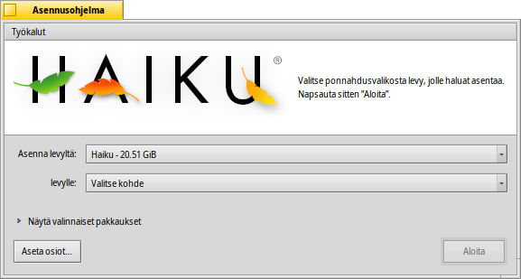

Asennusohjelma
Asennusohjelma
| Työpöytäpalkki: | ||
| Sijainti: | /boot/system/apps/Installer | |
| Asetukset: | ei mitään |
Asennusohjelmaa käytetään Haikun kopioimiseksi toiselle taltiolle.
Käynnistettäessä se näyttää käynnistysikkunan tärkeillä tiedoilla. Se ei ole järjetön EULA, jonka olet tottunut napsauttamaan pois silmänräpäyksessä, vaan se ilmoittaa:
Tämä on beeta-laatuinen ohjelmisto. Tee varmuuskopioita, tai kärsi seurauksista!
Asennusohjelma tarvitsee ennakolta valmistellun osion. Voit käyttää DriveSetup-sovellusta osion luomiseen ja alustamiseen, mutta et voi vielä muuttaa olemassa olevien osioiden kokoa. Sitä varten sinun on nyt käytettävä GParted LiveCD-levyä tai samanlaista työkalua.
- Haiku voidaan lisätä manuaalisesti alkulataushallintaan GRUB. Ohjeet siitä, kuinka tämä todella tehdään, ovat saatavilla osoitteesta verkko-opaste.
Kun olet kerran hyväksynyt -painikkeella, sinulle esitellään pääikkuna:
Ensimmäisessä ponnahdusvalikossa valitset asennuksen lähteen. Se voi olla jo asennettu Haiku-järjestelmä tai voi tulla asennus-CD-levyltä tai USB-levyltä, jne.
Toinen ponnahdusvalikko määrittelee asennuksen kohteen. Tämä kohdeosio/-taltio korvataan kokonaan ja se on laitettu etukäteen syrjään GParted-ohjelman tapaisella osiointityökalulla.
Pienen laajentajakäyttöliittymäkomponentin napsauttaminen avaa Näytä valinnaiset pakkaukset, jos niitä on käytettävissä, ja voit valita niitä asennettavaksi perus-Haikun lisäksi.
Sinun pitäisi lopuksi tarkistaa, että poimit todella oikean kohteen ennen asennusprosessin aloittamista. Napsauta painiketta , mikä käynnistää Levyasema-asetukset ja sinulla on näkymä olemassaolevien taltioiden ja osioiden nimeämiseksi ja sijoittelemiseksi.
käynnistää asennusproseduurin, joka perimmillään kopioi /home/- ja /system/ -kansion kohdetaltiolle ja tekee siitä käynnistettävän.
 Työkalut
Työkalut
Asennusproseduurin lopussa osio tehdään automaattisesti käynnistettäväksi. Voi kuitenkin tapahtua, että joku toinen käyttöjärjestelmä tai osiointityökalu (vahingossa) korvaa Haiku-taltion käynnistyssektorin. Käynnistä tässä tapauksessa asennus-CD-levysi ja aloita asennusohjelma. Valitse Haiku-käynnistysosio -valikko ja valitse valikosta taltion tekemiseksi uudelleen käynnistettäväksi.
Toista valintaa -valikossa käytetään -asetukseen, joka laittaa käynnistyssektoriin valikon, josta voidaan valita, mikä käyttöjärjestelmä käynnistetään. Katso lisätietoja aiheesta Käynnistyshallinta.
Sinun ei tarvitse suorittaa Käynnistyshallinta-ohjelmaa, jos käytät jo käynnistyshallintaa kuten GRUB, missä tapauksessa Haiku on lisättävä manuaalisesti (katso yllä), tai jos Haiku on ainoa käyttöjärjestelmä koneellasi.